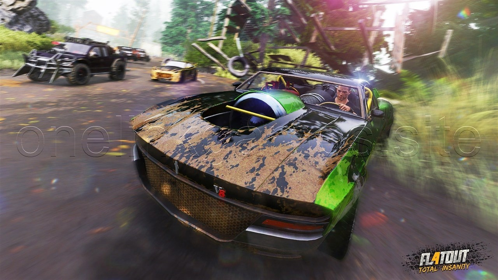
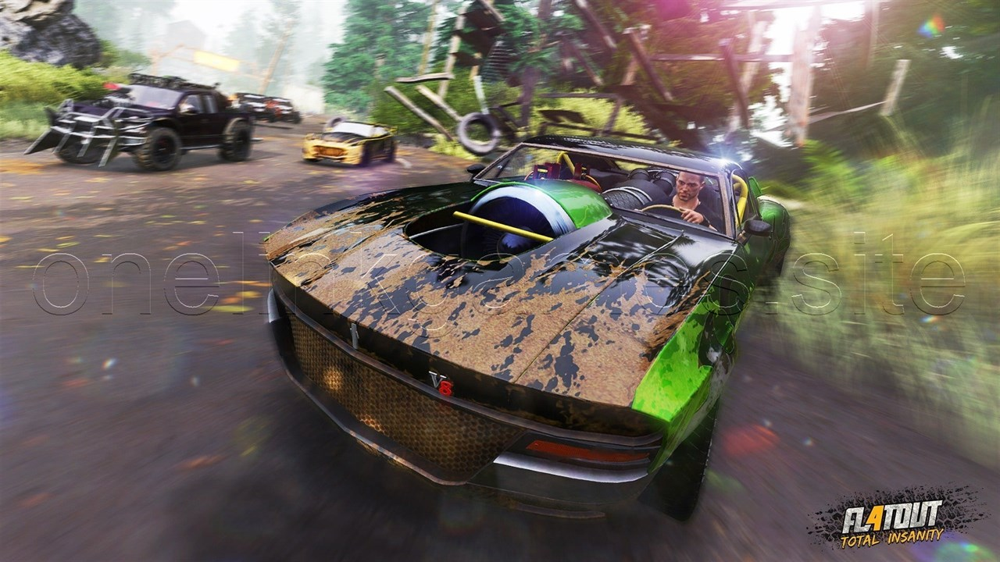

FlatOut 4 Total Insanity
Setup Size = 3.57gb
Platforms: PlayStation 4, Windows, and Xbox
About This Game
FlatOut 4 Total Insanity has introduced new and imposing vehicles, gaming modes and tracks. FlatOut 4 Total Insanity has got 2 exclusive arenas which are Factory Arena and Ice lake Arena. It also includes 2 exclusive drivers which are Dave Worker and Gadget Stewart. Two new vehicles are also introduced which are Repair Truck and Ice breaker. The cars included in this game are highly customizable and the gamers can unlock 27 cars. FlatOut 4 Total Insanity has got Arena Mode where there are three different play styles which includes Survivor, Capture the Flag and Death Match. It has also got a Hot Seat Mode which will let you take turn with your friends and family in hot seat competition of stunt. FlatOut 4 Total Insanity has got scintillating visuals and the sounds are also impressive.
Screenshots
 



System Requirements
- OS: 64-bit Windows 10 or later.
- Processor: Intel® Core i5 / AMD FX 8150
- Memory: 8 GB RAM
- Graphics: NVIDIA® GeForce® GTX 780 / AMD Radeon™ R9 290 2 GB
- DirectX: Version 11
- Storage: 10 GB available space
- Sound Card: DirectX Compatible Soundcard